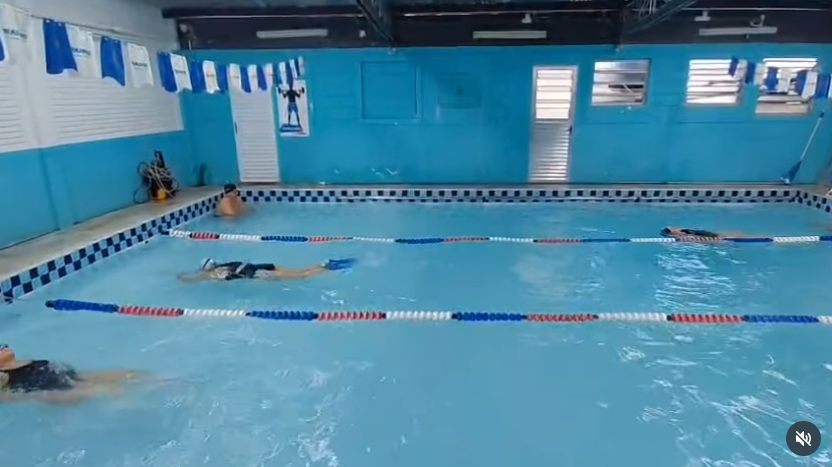
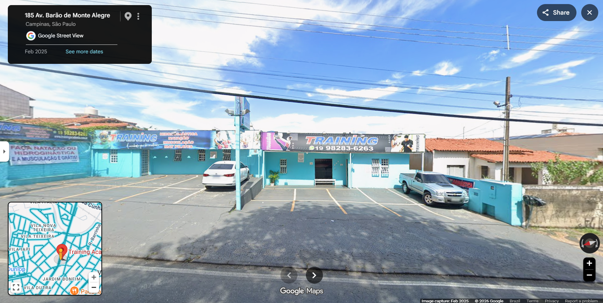

A atividade do dia 27ago propõe a prática dos conteúdos apresentados pelo prof. Ed nas aulas 1 a 5, como uso de tags de estruturação básica (cabeçalhos, linguagem), tags de formatação de texto, incorporação de links e inserção de imagens.
O desenvolvimento do exercício deve ser realizado escolhendo um tema de interesse do aluno, onde o aluno deverá aplicar os conceitos estudados.
Para ver a proposta do exercício, clique aqui e acesse o enunciado completo.
Obs.: Confesso que trazer o texto do professor numa página, e, adequá-la para ser exibida da forma que vemos no Teams,
foi um exercício extra, ajudou praticar o conteúdo.
Natação é o esporte que pratico atualmente.
Faço aulas 3 vezes por semana, e foi minha escolha para melhorar minha saúde.
Nos fins de semana procuro treinar musculação, o que ajuda no desempenho da Natação.
Faço aulas na escola Training de Campinas, no bairro Bonfim. Estou no nível iniciante.
A escola tem mais de 20 anos de existência, e gostei bastante da didática do professor.
Participo da turma de 6h45 da manhã, e depois vou para o trabalho.
Para saber mais sobre a escola, acessse:
 |
 |
| Psicina - Local das Aulas Fonte: @trainingacademiacps |
Fachada da Escola Training Fonte: GoogleMaps |
Iniciei essa atividade como alternativa para a saúde pois eu nao tinha muita motivação e constância para musculação.
Acabei me surpreendendo com o bem-estar que esta atividade me traz, consegui manter disciplina, e inclusive,
me impulsionou de volta para a musculação como meio para correção de performance.
Quando temos um lado do corpo menos fortalecido que o outro, nós nadamos "torto", especialmente iniciantes como eu.
É como remar um barco só com o remo de um lado - o barco vai pender para um lado e navegar em círculo.
Abaixo, uma lista de minhas afinidades com a Natação: